Una selección de espacios que diseñamos e instalamos en Río Cuarto y la región — cada uno con su propio carácter, pensado a partir de cómo se vive el lugar.
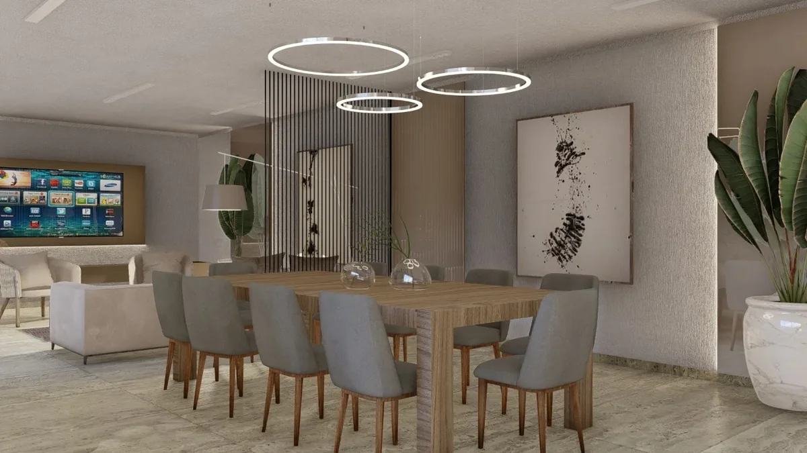
La familia llegó con una casa funcional pero sin personalidad: ambientes cerrados, colores fríos y poca luz natural aprovechada. El desafío era abrir el living y el comedor sin tocar paredes estructurales, y crear continuidad visual entre los ambientes.
Trabajamos con una paleta neutra cálida, cortinas que filtran la luz del oeste sin perder privacidad, y mobiliario de líneas bajas que libera el espacio visualmente. El resultado es un living que se siente más grande, más luminoso y, sobre todo, propio.
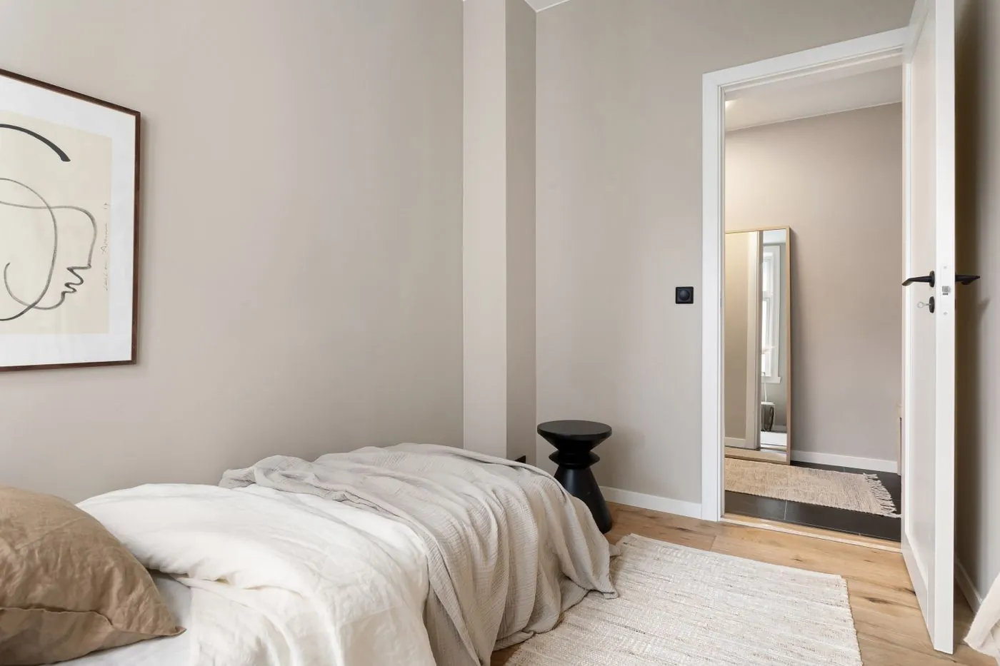
En un departamento a estrenar, el desafío fue diferente: partir de cero. Sin historia previa que respetar, pudimos diseñar el dormitorio principal desde el primer boceto, pensando en cómo la pareja quería empezar y terminar el día.
Elegimos textiles en tonos tierra, cortinas blackout para un descanso real y un placard integrado que desaparece visualmente. Cada elemento — desde la altura del cabecero hasta la temperatura de la luz — fue una decisión de diseño.
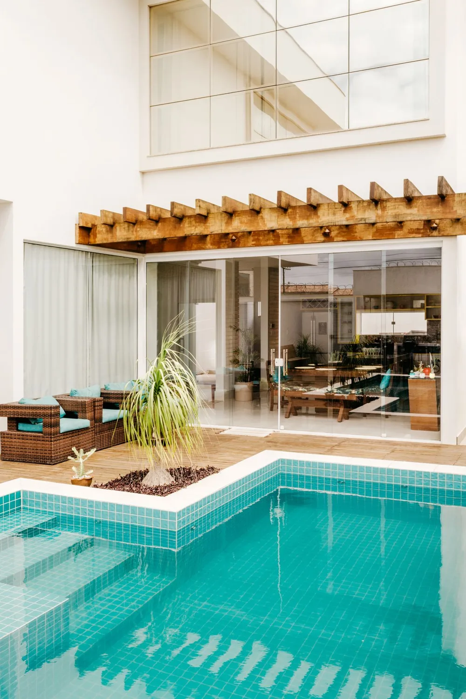
Un quincho subutilizado, con muebles de plástico y sin protección solar, era el punto de partida. La idea fue tratarlo como un ambiente más de la casa: con mobiliario pensado para estar, no solo para comer.
Instalamos un toldo retráctil que se adapta al sol y al viento, sumamos mobiliario de exterior resistente y de diseño, y definimos una paleta que dialoga con el verde del jardín. Hoy es el espacio que más usa la familia entre octubre y abril.
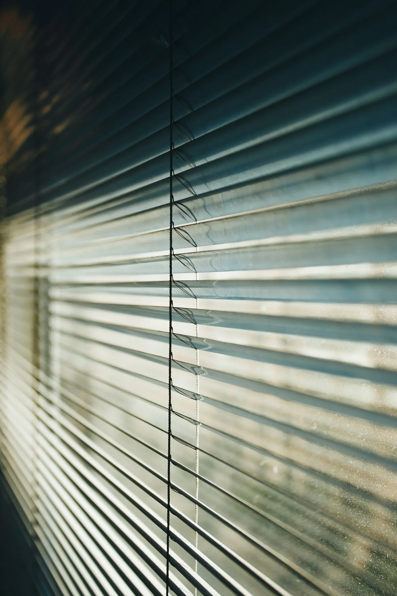
Un estudio profesional necesitaba que sus oficinas transmitieran la misma seriedad y calidez que su forma de trabajar con los clientes. La recepción y las cuatro oficinas tenían mobiliario heterogéneo y nada de identidad visual.
Definimos una paleta sobria con acentos cálidos, cortinas que controlan el reflejo en las pantallas sin perder luminosidad, y mobiliario que ordena visualmente cada oficina. El resultado se nota en cómo lo viven tanto el equipo como los clientes que los visitan.
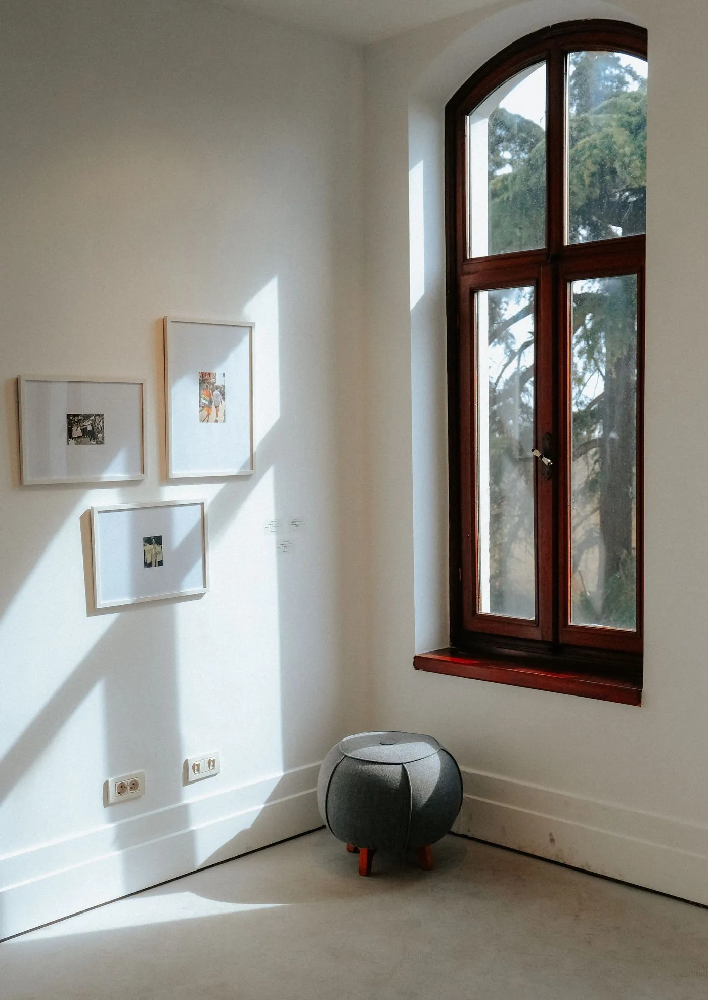
En una casa de campo a las afueras de Río Cuarto, la galería era el corazón de la vida familiar pero estaba descuidada: piso desparejo, sin protección del sol de la tarde y mobiliario que no acompañaba la escala del espacio.
Trabajamos con materiales nobles — madera, lino, hierro — y cortinas que se mueven con el viento sin perder funcionalidad. La galería hoy conecta la casa con el paisaje, y se usa todo el año.
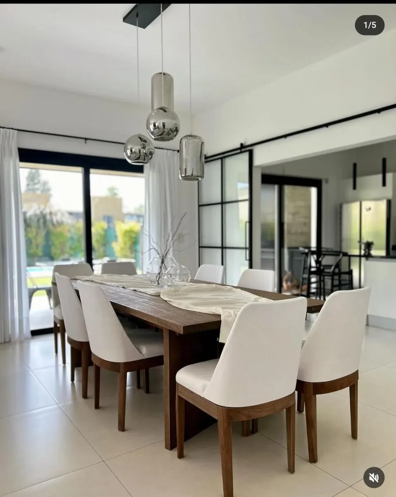
Río Cuarto, Córdoba
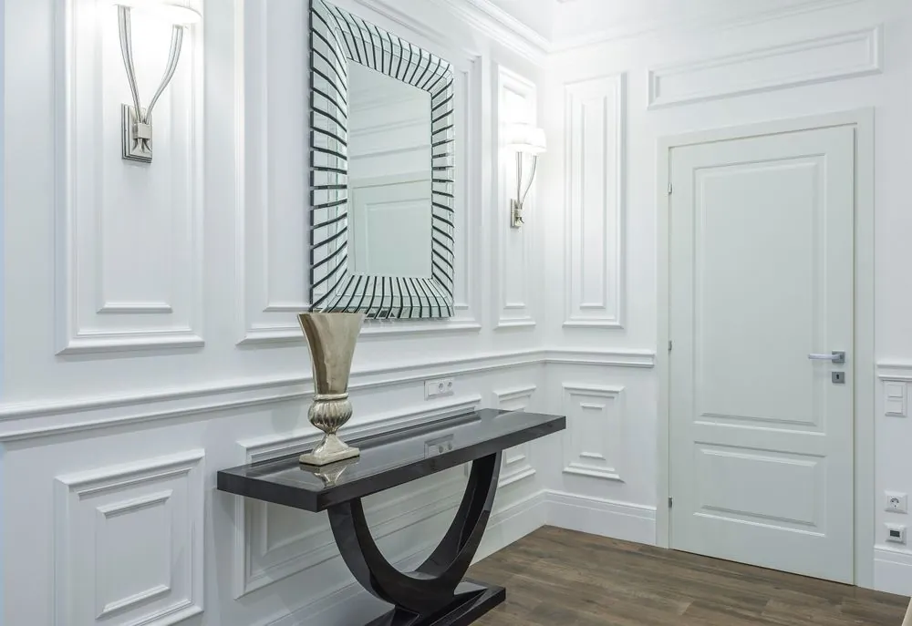
Río Cuarto, Córdoba
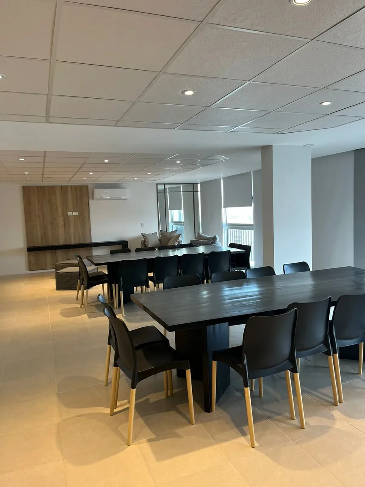
Río Cuarto, Córdoba
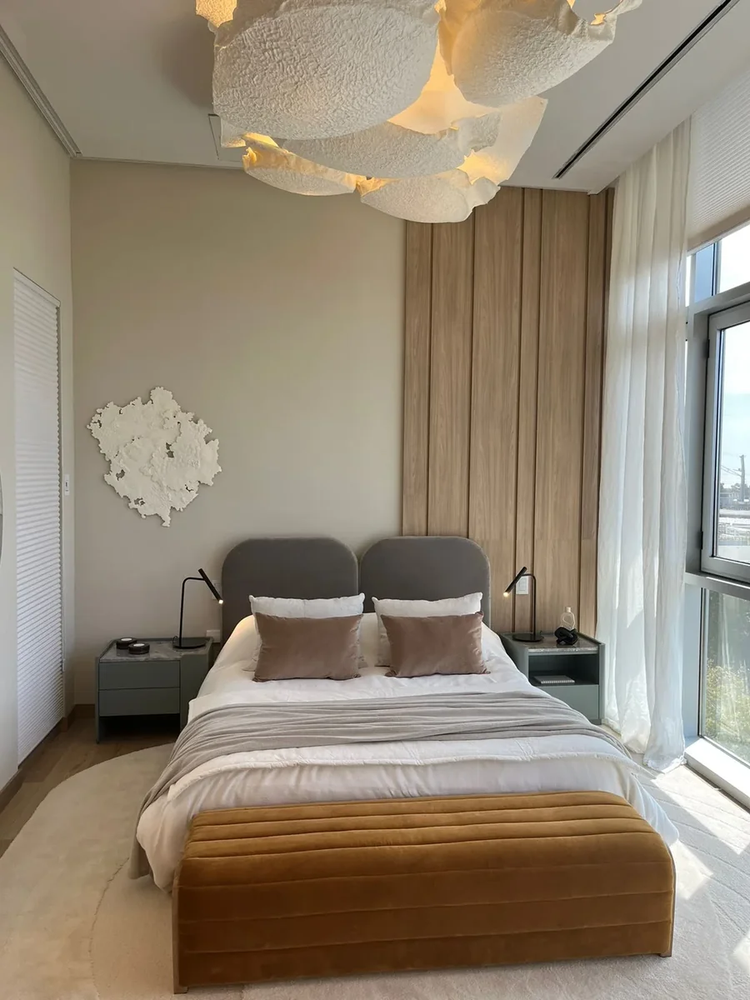
Río Cuarto, Córdoba
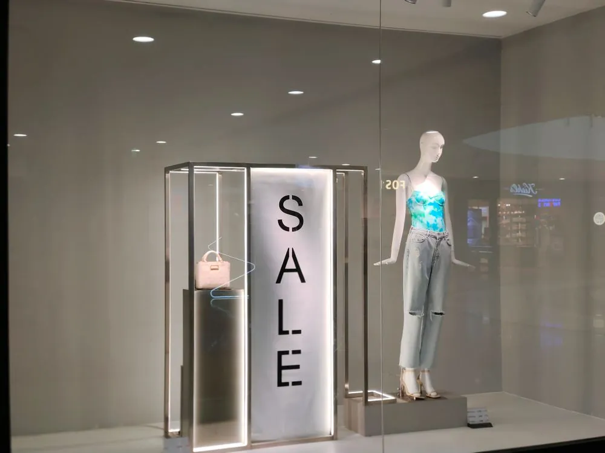
Río Cuarto, Córdoba
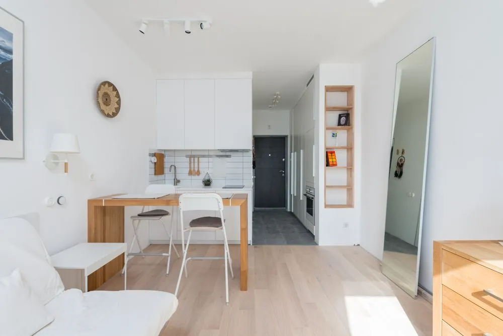
Río Cuarto, Córdoba
"Después de 20 años en la misma casa, no podíamos imaginar que el living se sintiera completamente nuevo sin mudar una pared. El equipo entendió perfectamente lo que necesitábamos."
"Buscábamos que nuestras oficinas reflejaran la seriedad del estudio sin perder calidez. El resultado superó las expectativas, y los clientes lo notan apenas entran."
Conversemos sobre tu espacio. Coordinamos una visita sin cargo y te mostramos cómo podemos ayudarte.